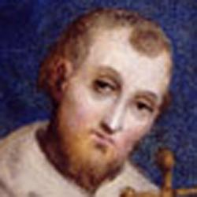

St. Francis of Assisi
(Italian: San Francesco d'Assisi, born Giovanni di Pietro di Bernardone, but
nicknamed Francesco ("the Frenchman") by his father, 1181/1182 – October 3,
1226) was an Italian Catholic friar and preacher.

He founded the men's Order
of Friars Minor, the women’s Order of St. Clare, and the Third Order of
Saint Francis for men and women not able to live the lives of itinerant
preachers followed by the early members of the Order of Friars Minor or the
monastic lives of the Poor Clares. Though he was never ordained to the
Catholic priesthood, Francis is one of the most venerated religious figures
in history.
Francis' father was Pietro
di Bernardone, a prosperous silk merchant. Francis lived the high-spirited
life typical of a wealthy young man, even fighting as a soldier for Assisi.
While going off to war in 1204, Francis had a vision that directed him back
to Assisi, where he lost his taste for his worldly life. On a pilgrimage to
Rome, he joined the poor in begging at St. Peter's Basilica. The experience
moved him to live in poverty. Francis returned home, began preaching on the
streets, and soon amassed a following. His Order was authorized by Pope
Innocent III in 1210. He then founded the Order of Poor Clares, which became
an enclosed religious order for women, as well as the Order of Brothers and
Sisters of Penance (commonly called the Third Order).
In 1219, he went to Egypt
in an attempt to convert the Sultan to put an end to the conflict of the
Crusades. By this point, the Franciscan Order had grown to such an extent
that its primitive organizational structure was no longer sufficient. He
returned to Italy to organize the Order. Once his community was authorized
by the Pope, he withdrew increasingly from external affairs. In 1223,
Francis arranged for the first Christmas manger scene. In 1224, he received
the stigmata, making him the first recorded person to bear the wounds of
Christ's Passion.He died during the evening hours of October 3, 1226, while
listening to a reading he had requested of Psalm 140.
On July 16, 1228, he was
pronounced a saint by Pope Gregory IX. He is known as the patron saint of
animals, the environment, and is one of the two patron saints of Italy (with
Catherine of Siena). It is customary for Catholic and Anglican churches to
hold ceremonies blessing animals on his feast day of October 4. He is also
known for his love of the Eucharist, his sorrow during the Stations of the
Cross, and for the creation of the Christmas creche or Nativity Scene.
Francis of Assisi was one
of seven children born to Pietro, and his wife Pica de Bourlemont, about
whom little is known except that she was a noblewoman originally from
Provence, France. Pietro was in France on business while Francis was born in
Assisi, and Pica had him baptized as Giovanni. When his father returned to
Assisi, he took to calling him Francesco ("the Frenchman"), possibly in
honour of his commercial success and enthusiasm for all things French. Since
the child was renamed in infancy, the change can hardly have had anything to
do with his aptitude for learning French, as some have thought.
As a youth, Francesco
became a devotee of troubadours and was fascinated with all things
Transalpine. Although many hagiographers remark about his bright clothing,
rich friends, and love of pleasures, his displays of disillusionment toward
the world that surrounded him came fairly early in his life, as is shown in
the "story of the beggar." In this account, he was selling cloth and velvet
in the marketplace on behalf of his father when a beggar came to him and
asked for alms. At the conclusion of his business deal, Francis abandoned
his wares and ran after the beggar. When he found him, Francis gave the man
everything he had in his pockets. His friends quickly chided and mocked him
for his act of charity. When he got home, his father scolded him in rage.
In 1201, he joined a
military expedition against Perugia and was taken as a prisoner at
Collestrada, spending a year as a captive. It is possible that his spiritual
conversion was a gradual process rooted in this experience. Upon his return
to Assisi in 1203, Francis returned to his carefree life and in 1204, a
serious illness led to a spiritual crisis. In 1205, Francis left for Puglia
to enlist in the army of the Count of Brienne. A strange vision made him
return to Assisi, deepening his ecclesiastical awakening.
According to the
hagiographic legend, thereafter he began to avoid the sports and the feasts
of his former companions. In response, they asked him laughingly whether he
was thinking of marrying, to which he answered, "yes, a fairer bride than
any of you have ever seen," meaning his "Lady Poverty". He spent much time
in lonely places, asking God for enlightenment. By degrees he took to
nursing lepers, the most repulsive victims in the lazar houses near Assisi.
After a pilgrimage to Rome, where he joined the poor in begging at the doors
of the churches, he said he had a mystical vision of Jesus Christ in the
country chapel of San Damiano, just outside of Assisi, in which the Icon of
Christ Crucified said to him, "Francis, Francis, go and repair My house
which, as you can see, is falling into ruins." He took this to mean the
ruined church in which he was presently praying, and so he sold some cloth
from his father's store to assist the priest there for this purpose.
His father, Pietro, highly
indignant, attempted to change his mind, first with threats and then with
beatings. In the midst of legal proceedings before the Bishop of Assisi,
Francis renounced his father and his patrimony, laying aside even the
garments he had received from him in front of the public. For the next
couple of months he lived as a beggar in the region of Assisi. Returning to
the countryside around the town for two years, he embraced the life of a
penitent, during which he restored several ruined chapels in the countryside
around Assisi, among them the Porziuncola, the little chapel of St. Mary of
the Angels just outside the town, which later became his favorite abode.
At the end of this period
(on February 24, 1209, according to Jordan of Giano), Francis heard a sermon
that changed his life forever. The sermon was about Matthew 10:9, in which
Christ tells his followers they should go forth and proclaim that the
Kingdom of Heaven was upon them, that they should take no money with them,
nor even a walking stick or shoes for the road. Francis was inspired to
devote himself to a life of poverty.
Clad in a rough garment,
barefoot, and, after the Gospel precept, without staff or scrip, he began to
preach repentance. He was soon joined by his first follower, a prominent
fellow townsman, the jurist Bernardo di Quintavalle, who contributed all
that he had to the work. Within a year Francis had eleven followers. Francis
chose never to be ordained a priest and the community lived as "lesser
brothers," fratres minores in Latin. The brothers lived a simple life in the
deserted lazar house of Rivo Torto near Assisi; but they spent much of their
time wandering through the mountainous districts of Umbria, always cheerful
and full of songs, yet making a deep impression upon their hearers by their
earnest exhortations.
Francis' preaching to
ordinary people was unusual since he had no license to do so. In 1209 he
composed a simple rule for his followers ("friars"), (the Regula primitiva
or “Primitive Rule”) which came from verses in the Bible. The rule was “To
follow the teachings of our Lord Jesus Christ and to walk in his footsteps.”
In 1209, Francis led his first eleven followers to Rome to seek permission
from Pope Innocent III to found a new religious Order. Upon entry to Rome,
the brothers encountered Bishop Guido of Assisi, who had in his company
Giovanni di San Paolo, the Cardinal Bishop of Sabina. The Cardinal, who was
the confessor of Pope Innocent III, was immediately sympathetic to Francis
and agreed to represent Francis to the pope. Reluctantly, Pope Innocent
agreed to meet with Francis and the brothers the next day. After several
days, the pope agreed to admit the group informally, adding that when God
increased the group in grace and number, they could return for an official
admittance. The group was tonsured. This was important in part because it
recognized Church authority and prevented his following from possible
accusations of heresy, as had happened to the Waldensians decades earlier.
Though Pope Innocent initially had his doubts, following a dream in which he
saw Francis holding up the Basilica of St. John Lateran (the cathedral of
Rome, thus the 'home church' of all Christendom), he decided to endorse
Francis' Order. This occurred, according to tradition, on April 16, 1210,
and constituted the official founding of the Franciscan Order. The group,
then the "Lesser Brothers" (Order of Friars Minor also known as the
Franciscan Order), preached on the streets and had no possessions. They were
centered in Porziuncola, and preached first in Umbria, before expanding
throughout Italy.
From then on, his new
Order grew quickly with new vocations. When hearing Francis preaching in the
church of San Rufino in Assisi in 1209, Clare of Assisi became deeply
touched by his message and she realized her calling. Her cousin Rufino, the
only male member of the family in their generation, also joined the new
Order.
On the night of Palm
Sunday, March 28, 1211, Clare sneaked out of her family's palace. Francis
received Clare at the Porziuncola and hereby established the Order of Poor
Ladies, later called Poor Clares. This was an Order for women, and he gave a
religious habit, or dress, similar to his own to the noblewoman later known
as St. Clare of Assisi, before he then lodged her and a few companions in a
nearby monastery of Benedictine nuns. Later he transferred them to San
Damiano. There they were joined by many other women of Assisi. For those who
could not leave their homes, he later formed the Third Order of Brothers and
Sisters of Penance. This was a fraternity composed of either laity or clergy
whose members neither withdrew from the world nor took religious vows.
Instead, they carried out the principles of Franciscan life in their daily
lives. Before long this Order grew beyond Italy.
Determined to bring the
Gospel to all God's creatures, Francis sought on several occasions to take
his message out of Italy. In the late spring of 1212, he set out for
Jerusalem, but he was shipwrecked by a storm on the Dalmatian coast, forcing
him to return to Italy. On May 8, 1213, he was given the use of the mountain
of La Verna (Alverna) as a gift from Count Orlando di Chiusi, who described
it as “eminently suitable for whoever wishes to do penance in a place remote
from mankind.”[21][22] The mountain would become one of his favourite
retreats for prayer. In the same year, Francis sailed for Morocco, but this
time an illness forced him to break off his journey in Spain. Back in
Assisi, several noblemen (among them Tommaso da Celano, who would later
write the biography of St. Francis) and some well-educated men joined his
Order. In 1215, Francis went again to Rome for the Fourth Lateran Council.
During this time, he probably met a canon, Dominic de Guzman (later to be
Saint Dominic, the founder of the Friars Preachers, another Catholic
religious order). In 1217, he offered to go to France. Cardinal Ugolino of
Segni (the future Pope Gregory IX), an early and important supporter of
Francis, advised him against this and said that he was still needed in
Italy.
In 1219, accompanied by
another friar and hoping to convert the Sultan of Egypt or win martyrdom in
the attempt, Francis went to Egypt where a Crusader army had been encamped
for over a year besieging the walled city of Damietta two miles (3.2 km)
upstream from the mouth of one of the main channels of the Nile. The Sultan,
al-Kamil, a nephew of Saladin, had succeeded his father as Sultan of Egypt
in 1218 and was encamped upstream of Damietta, unable to relieve it. A
bloody and futile attack on the city was launched by the Christians on
August 29, 1219, following which both sides agreed to a ceasefire which
lasted four weeks.It was most probably during this interlude that Francis
and his companion crossed the Saracen lines and were brought before the
Sultan, remaining in his camp for a few days. The visit is reported in
contemporary Crusader sources and in the earliest biographies of Francis,
but they give no information about what transpired during the encounter
beyond noting that the Sultan received Francis graciously and that Francis
preached to the Saracens without effect, returning unharmed to the Crusader
camp. No contemporary Arab source mentions the visit. One detail, added by
Bonaventure in the official life of Francis (written forty years after the
event), concerns an alleged challenge by Francis offering trial-by-fire in
order to prove the veracity of the Christian Gospel.Although Bonaventure
does not suggest as much, subsequent biographies went further, claiming that
a fire was kindled which Francis unhesitatingly entered without suffering
burns. Such an incident is depicted in the late 13th-century fresco cycle,
attributed to Giotto, in the upper basilica at Assisi (see accompanying
illustration). According to some late sources, the Sultan gave Francis
permission to visit the sacred places in the Holy Land and even to preach
there. All that can safely be asserted is that Francis and his companion
left the Crusader camp for Acre, from where they embarked for Italy in the
latter half of 1220. Drawing on a 1267 sermon by Bonaventure, later sources
report that the Sultan secretly converted or accepted a death-bed baptism as
a result of the encounter with Francis. The Franciscan Order has been
present in the Holy Land almost uninterruptedly since 1217 when Brother
Elias arrived at Acre. It received concessions from the Mameluke Sultan in
1333 with regard to certain Holy Places in Jerusalem and Bethlehem, and (so
far as concerns the Catholic Church) jurisdictional privileges from Pope
Clement VI in 1342.
At Greccio near Assisi,
around 1220, Francis celebrated Christmas by setting up the first known
presepio or crèche (Nativity scene). His nativity imagery reflected the
scene in traditional paintings. He used real animals to create a living
scene so that the worshipers could contemplate the birth of the child Jesus
in a direct way, making use of the senses, especially sight. Thomas of
Celano, a biographer of Francis and Saint Bonaventure both, tell how he only
used a straw-filled manger (feeding trough) set between a real ox and
donkey. According to Thomas, it was beautiful in its simplicity with the
manger acting as the altar for the Christmas Mass.
By this time, the growing
Order of friars was divided into provinces and groups were sent to France,
Germany, Hungary, Spain and to the East. When receiving a report of the
martyrdom of five brothers in Morocco, Francis returned to Italy via Venice.
Cardinal Ugolino di Conti was then nominated by the Pope as the protector of
the Order. The friars in Italy at this time were causing problems, and as
such, Francis had to return in order to correct these problems. The
Franciscan Order had grown at an unprecedented rate, when compared to prior
religious orders, but its organizational sophistication had not kept up with
this growth and had little more to govern it than Francis' example and
simple rule. To address this problem, Francis prepared a new and more
detailed Rule, the "First Rule" or "Rule Without a Papal Bull" (Regula prima
Regula non bullata) which again asserted devotion to poverty and the
apostolic life. However, it introduced greater institutional structure,
although this was never officially endorsed by the pope.
On September 29, 1220,
Francis handed over the governance of the Order to Brother Peter Catani at
the Porziuncola. However, Brother Peter died only five months later, on
March 10, 1221, and was buried in the Porziuncola. When numerous miracles
were attributed to the deceased brother, people started to flock to the
Porziuncola, disturbing the daily life of the Franciscans. Francis then
prayed, asking Peter to stop the miracles and to obey in death as he had
obeyed during his life. The reports of miracles ceased. Brother Peter was
succeeded by Brother Elias as Vicar of Francis. Two years later, Francis
modified the "First Rule" (creating the "Second Rule" or "Rule With a
Bull"), and Pope Honorius III approved it on November 29, 1223. As the
official Rule of the order, it called on the friars "to observe the Holy
Gospel of our Lord Jesus Christ, living in obedience without anything of our
own and in chastity." In addition, it set regulations for discipline,
preaching, and entry into the order. Once the Rule was endorsed by the Pope,
Francis withdrew increasingly from external affairs. During 1221 and 1222,
Francis crossed Italy, first as far south as Catania in Sicily and
afterwards as far north as Bologna.
While he was praying on
the mountain of Verna, during a forty-day fast in preparation for Michaelmas
(September 29), Francis is said to have had a vision on or about September
14, 1224, the Feast of the Exaltation of the Cross, as a result of which he
received the stigmata. Brother Leo, who had been with Francis at the time,
left a clear and simple account of the event, the first definite account of
the phenomenon of stigmata. "Suddenly he saw a vision of a seraph, a
six-winged angel on a cross. This angel gave him the gift of the five wounds
of Christ." Suffering from these stigmata and from trachoma, Francis
received care in several cities (Siena, Cortona, Nocera) to no avail. In the
end, he was brought back to a hut next to the Porziuncola. Here, in the
place where it all began, feeling the end approaching, he spent the last
days of his life dictating his spiritual testament. He died on the evening
of October 3, 1226, singing Psalm 142(141) – "Voce mea ad Dominum".
--en.wikipedia.org/wiki/Francis_of_Assisi
(excerpts)
引言
不论在什么时代，逆境都是时常出现的。在逆境中，不同人会展现出不同的态度。这次让我们来感受一下一位生活于中世纪的意大利的僧人、诗人，亚西西的方济各(Francis
of Assisi, 1181 - 1226)，于晚年因病临终前创作的一首献给大自然的颂歌，名为《太阳颂歌》(The Canticle of the
Sun)。
诗歌的原文是用意大利的方言创作的，后被翻译为多种语言。爱尔兰教士Paschal
Robinson于1906年将其翻译为英文，保留了原本意大利语的节奏，所以用词与文法与普通的英文不完全相同，但读起来朗朗上口。
英文译文
The Canticle of the Sun
by Francis of Assisi
Translated by Paschal Robinson
Most high, omnipotent, good Lord,
Praise, glory and honor and benediction all, are Thine.
To Thee alone do they belong, most High,
And there is no man fit to mention Thee.
Praise be to Thee, my Lord, with all Thy creatures,
Especially to my worshipful brother sun,
The which lights up the day, and through him dost Thou brightness give;
And beautiful is he and radiant with splendor great;
Of Thee, most High, signification gives.
Praised be my Lord, for sister moon and for the stars,
In heaven Thou hast formed them clear and precious and fair.
Praised be my Lord for brother wind
And for the air and clouds and fair and every kind of weather,
By the which Thou givest to Thy creatures nourishment.
Praised be my Lord for sister water,
The which is greatly helpful and humble and precious and pure.
Praised be my Lord for brother fire,
By the which Thou lightest up the dark.
And fair is he and gay and mighty and strong.
Praised be my Lord for our sister, mother earth,
The which sustains and keeps us
And brings forth diverse fruits with grass and flowers bright.
Praised be my Lord for those who for Thy love forgive
And weakness bear and tribulation.
Blessed those who shall in peace endure,
For by Thee, most High, shall they be crowned.
Praised be my Lord for our sister, the bodily death,
From the which no living man can flee.
Woe to them who die in mortal sin;
Blessed those who shall find themselves in Thy most holy will,
For the second death shall do them no ill.
Praise ye and bless ye my Lord, and give Him thanks,
And be subject unto Him with great humility.
[Leonid Tit] ©123RF.com 背景
亚西西的方济各(Francis of Assisi, 1181 -
1226)，出生于12世纪意大利一个名为亚西西的小城，家里是卖丝绸的富商。年轻时代的方济各生活十分富足，热衷于诗歌文艺。他花起钱来也是大手大脚，毫不吝啬，甚至不顾朋友的嘲笑而豪爽地施舍穷人。
二十岁左右时，为了当上骑士，晋升名门，方济各参加了一次城邦之间的战争，却不幸沦为俘虏，还患上疾病。他回到亚西西之后，生活态度逐渐发生转变，似乎不再爱好世俗高攀的生活。虽然他的父亲极力试图让他继承家业，但是他更加乐于清贫的云游生活。后来，方济各受不了父亲的逼迫，在众人面前毅然放弃了富贵的家境，甚至把衣服都扔在地上，开始了流浪的苦行僧生活，游走于山林和修道院之间，甚至与麻风病院的人们一同生活，照顾他们的起居。
方济各的人格魅力和慈悲怜悯之心吸引了许多粉丝和追随者，也来跟着他过清贫而远离尘世的宁静生活。传说他在森林里行走时，连鸟儿都降落到他身上，听他布道。还有传说他曾帮助一个村子的人们和一匹狼和解，说服了狼不再来袭击村民。后来，在他的不懈努力下，他的团体终于也得到了教皇的认可，而不至于遭到迫害。
之后，方济各游走四方，游说各地的人们，甚至去了埃及，试图与穆斯林进行和解。虽然和解没有完全成功，但是他和他的团体也得到了穆斯林的尊重，在“圣地”有着一席之地。
晚年的方济各退出了种种事务，在疾病中等待着去世。临终前的几年，他在一个小村舍里写下了这首著名的《太阳颂歌》(The Canticle of the
Sun)，也称为《万物颂》(Laudes Creaturarum)。
方济各于1226年10月3日去世，为了纪念他以及他对自然和动物的热爱，他去世的第二天，也就是每年的10月4日，被定为“世界动物日”。
方济各与狼， Saint Francis talking to the wolf of Gubbio (Carl Weidemeyer,
1911)中文解读
Most high, omnipotent, good Lord,
Praise, glory and honor and benediction all, are Thine.
至高、全能、善良的主啊，一切赞美、光辉、荣耀与祝福都属于你。
To Thee alone do they belong, most High,
And there is no man fit to mention Thee.
这些荣耀都属于你一个，至高的主啊，没有人能够配得上说出你的名字。
Praise be to Thee, my Lord, with all Thy creatures,
Especially to my worshipful brother sun,
The which lights up the day, and through him dost Thou brightness give;
赞美你，我的主，赞美你所创造出的万物。尤其赞美值得崇敬的太阳哥哥，他照亮天空，你通过他给了我们光明。
And beautiful is he and radiant with splendor great;
Of Thee, most High, signification gives.
他是多么的美丽，放射着万丈光芒;至高的主啊，他与你最相似。
Praised be my Lord, for sister moon and for the stars,
In heaven Thou hast formed them clear and precious and fair.
赞美你，我的主，赞美月亮姐姐和星星们，你把她们创造得清澈、珍贵又动人。
Praised be my Lord for brother wind
And for the air and clouds and fair and every kind of weather,
By the which Thou givest to Thy creatures nourishment.
赞美你，我的主，赞美风儿弟弟，赞美空气，赞美云朵，赞美晴天和各种各样的天气，你通过他们滋养了你创造的万物。
Praised be my Lord for sister water,
The which is greatly helpful and humble and precious and pure.
赞美你，我的主，赞美水姐姐，她多么有益、谦虚、珍贵而又纯洁。
Praised be my Lord for brother fire,
By the which Thou lightest up the dark.
And fair is he and gay and mighty and strong.
赞美你，我的主，赞美火弟弟，你通过他为我们照亮了黑暗。他英俊、快活、勇猛又健壮。
Praised be my Lord for our sister, mother earth,
The which sustains and keeps us
And brings forth diverse fruits with grass and flowers bright.
赞美你，我的主，赞美我们的姐姐，地球母亲，她滋养照料着我们，生产出种种果实与芳草鲜花。
Praised be my Lord for those who for Thy love forgive
And weakness bear and tribulation.
赞美你，我的主，赞美那些为了你的慈爱而心怀原谅的人们，他们能够接受病弱与磨难的考验。
Blessed those who shall in peace endure,
For by Thee, most High, shall they be crowned.
能在宁静中等待并不抱怨的人们有福了，因为至高的主啊，你必为他们加冕为王。
Praised be my Lord for our sister, the bodily death,
From the which no living man can flee.
赞美你，我的主，赞美我们的妹妹，她名为身体之死亡，最终没有人能够逃脱她的手掌。
Woe to them who die in mortal sin;
Blessed those who shall find themselves in Thy most holy will,
For the second death shall do them no ill.
那些在愚昧与过失中死去的人们，我为他们惋惜。而那些在你最神圣的意愿下死去的人们，他们是有福的， 因为对他们来说，第二次的死亡并不痛苦。
Praise ye and bless ye my Lord, and give Him thanks,
And be subject unto Him with great humility.
赞美你，祝福你，我的主。感谢他，虚怀若谷地顺服于他吧。
[Leonid Tit] ©123RF.com
思考
1. 在我们的生活中，是否也经历过这样一些时刻，令我们感觉世间的万事万物都有一种像家人一样的亲切感?
2.
在诗人的眼里，即使是没有生命、没有感情的“物”，也会被看成有生命、有感情的“人”。与之相反，在人们沉迷于追求成功与功绩时，是否反而有时会把有生命和感情的“人”，当作“物”一样来对待和利用呢?
3. 什么是“原谅”?为什么要原谅?为什么要接受病弱与磨难?
4. 为什么要在宁静中等待而不抱怨?为什么这么做的人会被“加冕为王”?他们与怒不敢言、忍气吞声而不敢作为的人有什么区别?
5. 诗人说，“第二次的死亡并不痛苦”，那么，第一次的死亡指的是什么?
6. 诗人的观点有没有什么时空和文化圈的局限性?有没有普适性?
总结
我们看到，一个热爱生命的人，即使是在病痛与临终之际，看到的也都是世界的美丽与富饶。只要我们愿意抛弃抱怨与不满，就能发现生活中的美，感受到大自然的和谐与祝福。
春有百花秋有月，夏有凉风冬有雪。
若无闲事挂心头，便是人间好时节。
---无门慧开(1183 - 1260)

{kind=link}
{kind=link}